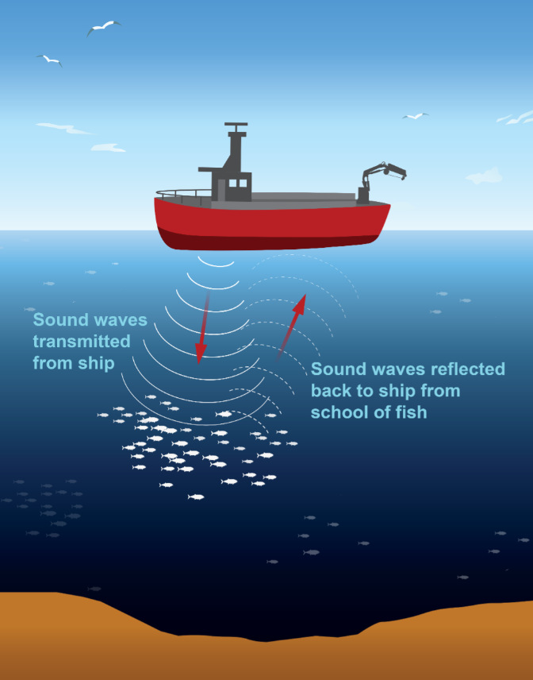

Overview of the Data We Work With
The Ocean Acoustics Archive provides long-term stewardship and global access to data and products from water column sonar and passive acoustic monitoring systems.
Water Column Sonar Data
Water column sonar data are routinely collected and used by NOAA to inform fish stock assessments, characterize habitat, remotely detect methane seeps, and monitor undersea oil spills.


The Water Column Sonar Data Archive began through a partnership with NOAA Fisheries in 2011, staffing of the original archive team in 2013, and the operational pipeline launched in 2014.
The majority of archived sonar data were collected by NOAA Fisheries partners across all six Fisheries Science Centers. The archive also comprises sonar data collected by the Rolling Deck To Repository program, NOAA NOS with numerous datasets specifically from NCCOS, NOAA OAR Office of Ocean Exploration (OER) from NOAA Ship Okeanos Explorer, and several academic and international institutions.
An overview of how and why partners across three different NOAA Line Offices collect water column sonar data can be found in this Story Map collaboratively written with scientists across NEFSC, AFSC, NCCOS, OER, and CIRES/NCEI.
Since its beginning in 2014, the archive has expanded to include data from a variety of sonar systems operating on vessels, stationary moorings, and autonomous platforms.
This expansion also supports the unique submission formats from principal providers such as the Rolling Deck To Repository program and NOAA Ship Okeanos Explorer into the archive.
The team supports the NOAA OMAO Data Rescue Project.
All publicly accessible data and products in the NCEI Water Column Sonar Data Archive can be discovered in its dedicated map viewer.
Passive Acoustic Monitoring
Passive acoustic monitoring is a powerful observational tool that NOAA uses to detect and characterize sounds produced by fish and marine mammals, ambient noise from physical oceanographic processes, and anthropogenic noise sources that contribute to the overall ocean soundscape.


The NOAA Ocean Noise Strategy articulates the agency’s vision for addressing ocean noise impacts to the species, ecosystems, and places it is entrusted to protect and guide science and management actions towards that vision. The NCEI Passive Acoustic Data Archive is a flagship project for the Ocean Noise Strategy.
The NCEI Passive Acoustic Data Archive was established in 2017.
Archived data and products are the result of long-term passive acoustic monitoring efforts and are typically cross NOAA Line Office and/or multi-agency. Some examples include the NOAA-Navy Sanctuary Soundscape Monitoring Project (SanctSound), NOPP-funded and UNH-led Atlantic Deepwater Ecosystem Observatory Network (ADEON), BOEM-funded, Cornell University-led monitoring efforts typically associated with monitoring of offshore energy development, and the NOAA-led with collaboration from Mexican scientists Long-term Investigations into Soundscapes, Trends, Ecosystems, and Noise in the Gulf of Mexico (Listen GoMex).
Biological, physical, and anthropogenic sound sources are recorded using a variety of platforms with underwater hydrophones and recording systems from mobile to stationary to animal-borne (right).
All publicly accessible data and products in the NCEI Passive Acoustic Data Archive can be discovered in its dedicated map viewer.
Articles of Interest:
Conservation Bioacoustics- Listening to the Heartbeat of the Earth
The Next Wave of Passive Acoustic Data Management: How Centralized Access Can Enhance Science
Earth Science Data Repositories: Implementing the CARE Principles
Listening to animal behavior to understand changing ecosystems
Other Links:
Extra resources
You can see a few extra resources for the data overview - Here